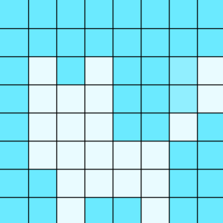
El gatito
Curioso, sensible y un poco desconfiado. Después de perder su hogar, necesita tiempo y señales de cuidado antes de volver a confiar.
Una historia de abandono, confianza y segundas oportunidades.
Empieza tu aventuraHaz clic dentro del juego para que el teclado controle al personaje. Explora el bosque y ayuda al pequeño humano a encontrar los 14 trozos de lana que necesita para que el gatito se vaya con él.
Controles: usa las flechas del teclado después de hacer clic en el juego.
Un día, mientras bajas de la montaña y recorres el bosque, encuentras a un gatito muy lindo.
Quieres adoptarlo, pero él te cuenta que tiene mucho frío y te pide que reúnas una cantidad exacta de trozos de lana para ayudarlo a preparar algo que lo abrigue.
Así comienza tu aventura por el bosque. En el camino, otros animales te ayudarán a completar las misiones y a encontrar los materiales que necesitas. Cuando termines, podrás cumplir tu promesa y el gatito se irá contigo.

Curioso, sensible y un poco desconfiado. Después de perder su hogar, necesita tiempo y señales de cuidado antes de volver a confiar.
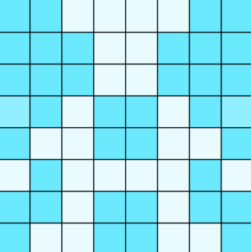
El personaje jugador, expresa su decisión con lo que hace. Busca los trozos de lana y cumple la promesa que le hizo al gatito.
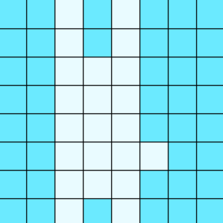
Es un amigo que hizo el gatito cuando estuvo en el bosque el cual ayuda al humano a cumplir su objetivo
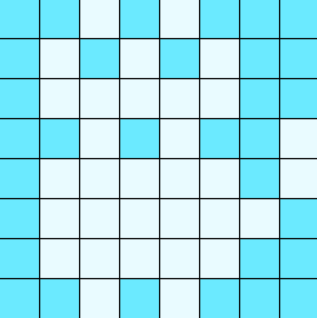
Es amigo del conejito y el gatito, también busca ayudar al humano a cumplir su promesa.
El recorrido pasa de la montaña al bosque. Cada lugar acerca al humano al gatito y a los trozos de lana que necesita.
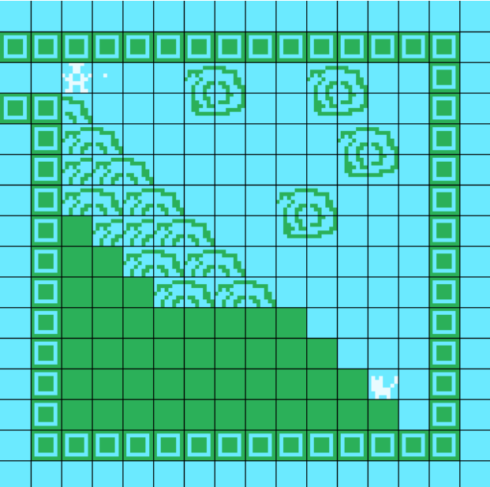
Al bajar por el camino, el humano llega al bosque y encuentra al gatito.
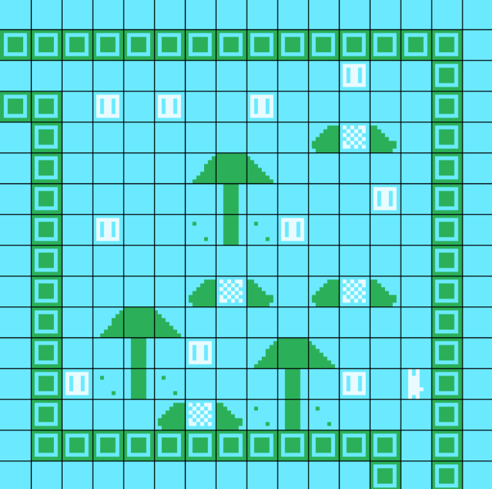
Un lugar donde viven los conejos, ahí el conejito le explica que debe de hacer el pequeño humano.
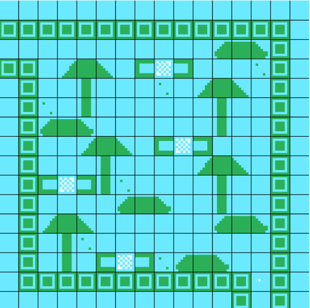
Una parte del bosque lleno de árboles y plantas.
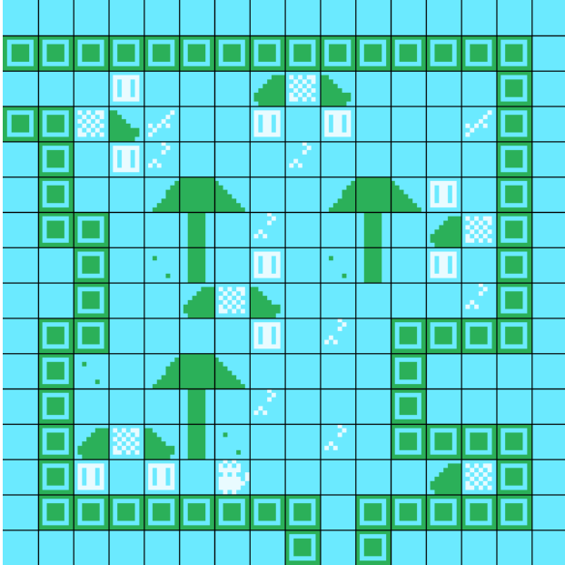
Un lugar donde viven los lobos, ahí el pequeño humano recibe ayuda del lobito, amigo del gatito.
Miauu. Estos son algunos recuerdos que mis patitas pudieron capturar.
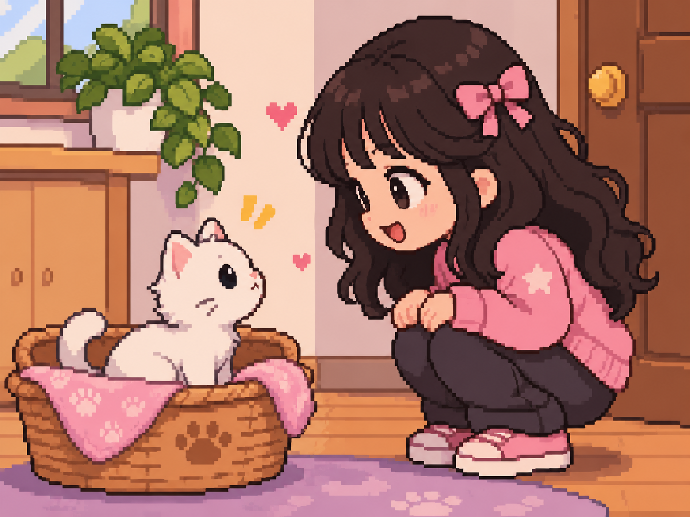
Miau… El primer día llegué a una casa nueva. La niña estaba tan feliz de verme que enseguida quise acercarme a ella.
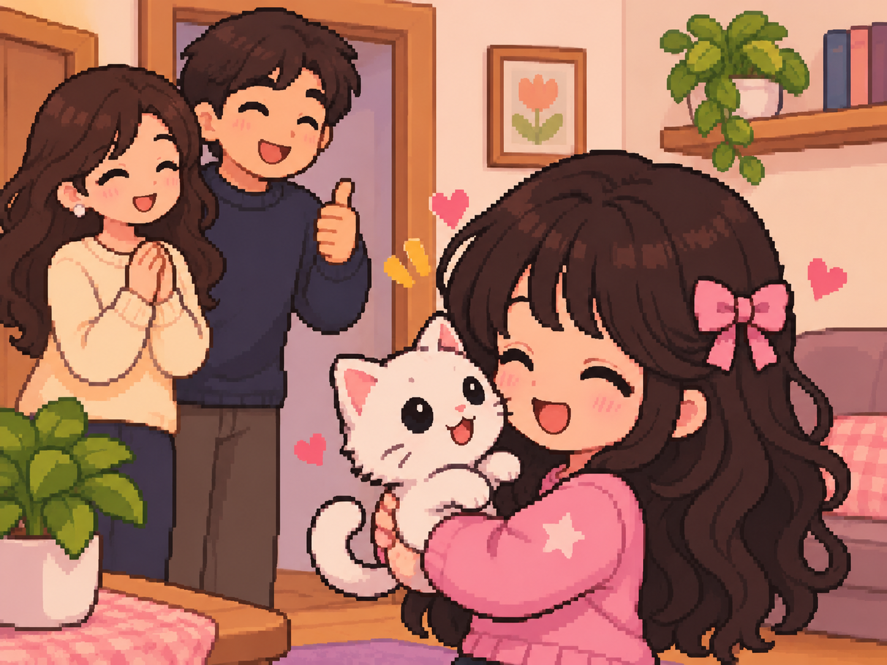
Sus padres no estaban muy convencidos de tener una mascota, pero al verla tan contenta aceptaron que me quedara. Yo todavía no sabía cuánto iba a querer a esa niña. Miauu.
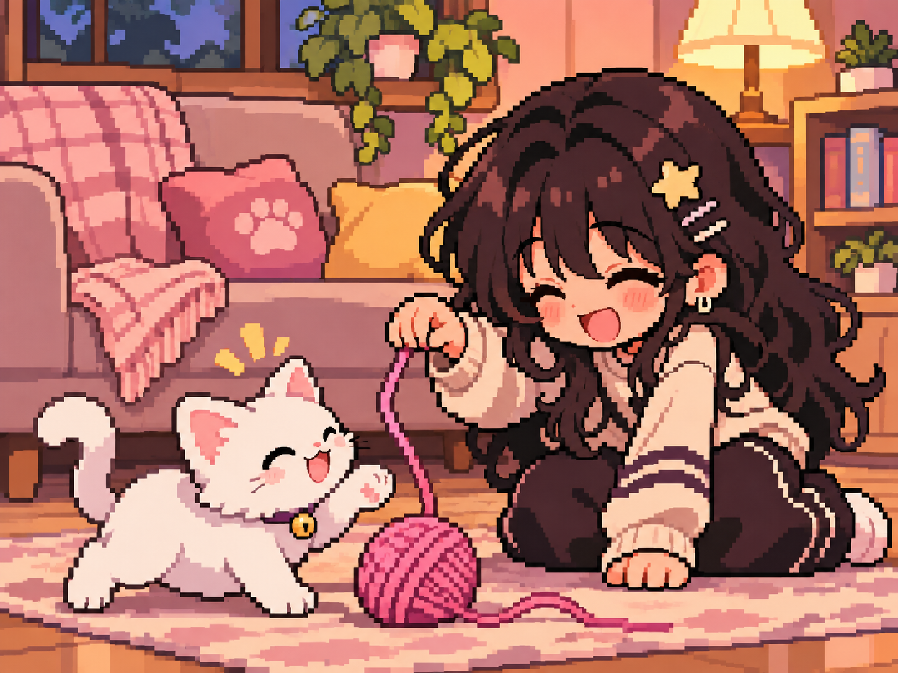
La niña y yo pronto nos volvimos inseparables. Corríamos por la casa y perseguíamos juguetes. Yo siempre ganaba… aunque a veces el juguete se escondía debajo del sofá.
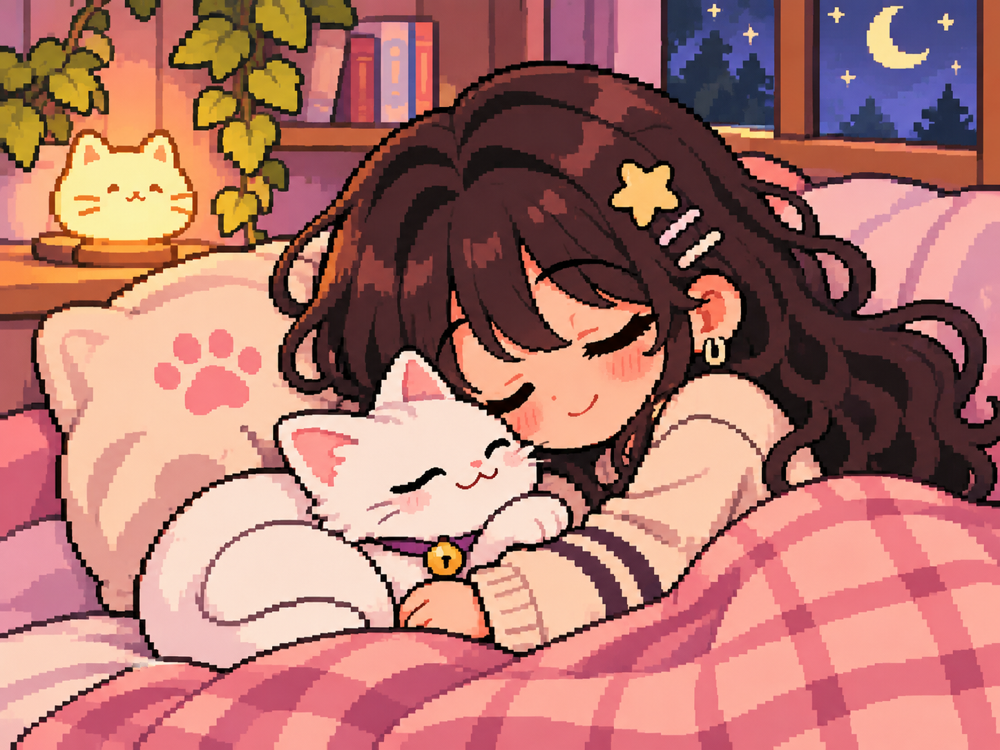
Cuando llegaba la noche, buscaba un lugar cerquita de ella. Con su compañía y una manta calentita, podía dormir tranquilo. Rrrr…
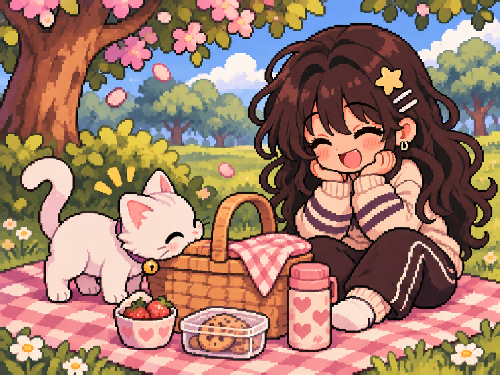
Un día fuimos de picnic. Mientras la niña disfrutaba la tarde, yo investigué la manta, la cesta y cada hoja que se movía. Todo podía esconder algo interesante.
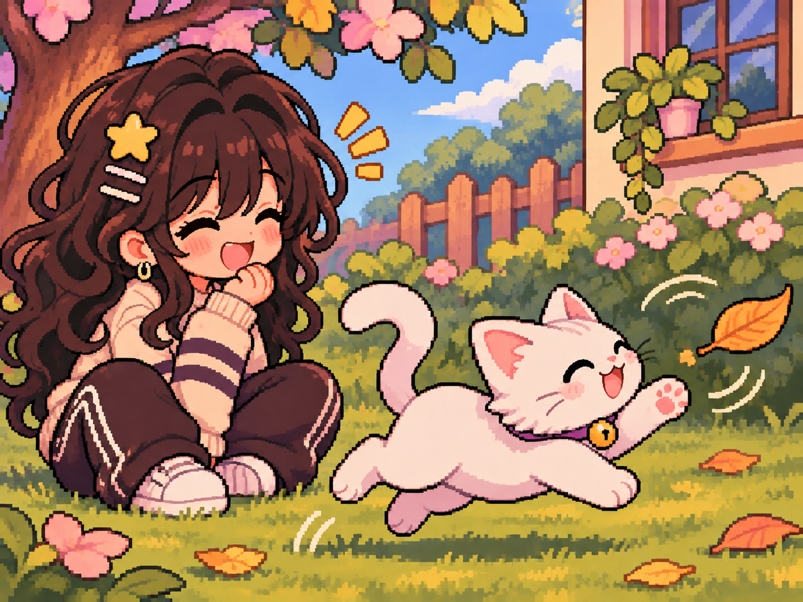
Pasamos muchos días juntos: jugábamos, explorábamos y descansábamos. Yo creía que siempre estaríamos en casa, acompañándonos.
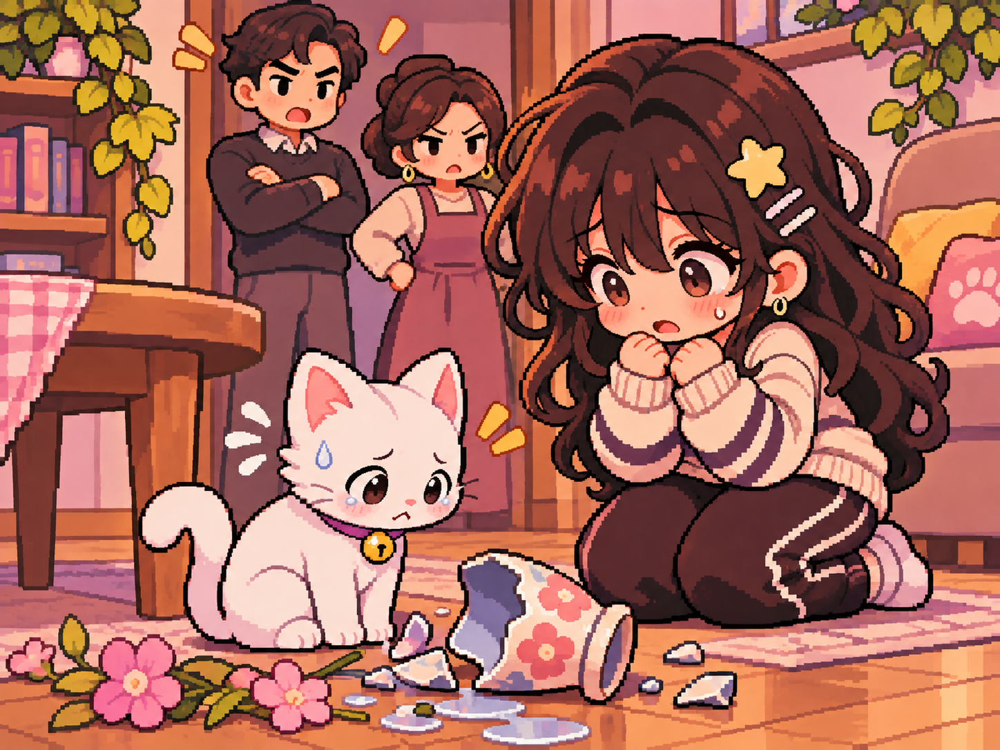
Una tarde salté sobre un mueble y, sin querer, tiré un jarrón. El ruido me asustó tanto como a todos los humanos de la casa. Yo no quería romperlo, lo prometo…
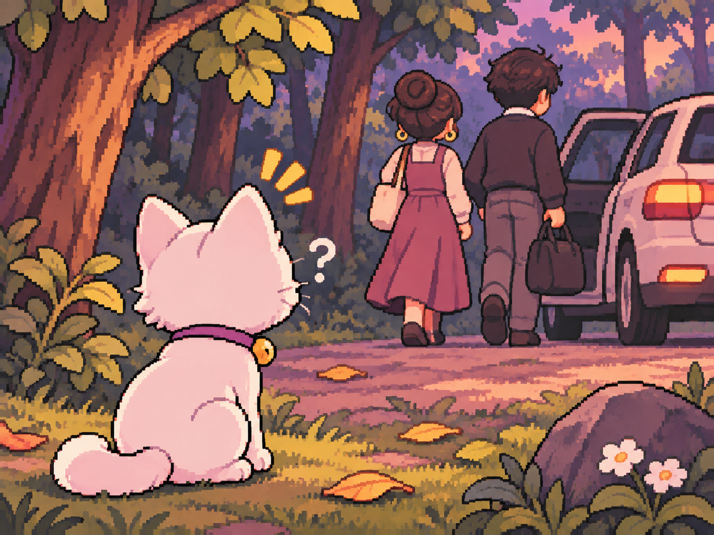
Los padres de la niña se enojaron mucho. Después escuché que ya no querían tenerme en casa. No entendía por qué; solo sabía que algo estaba cambiando.
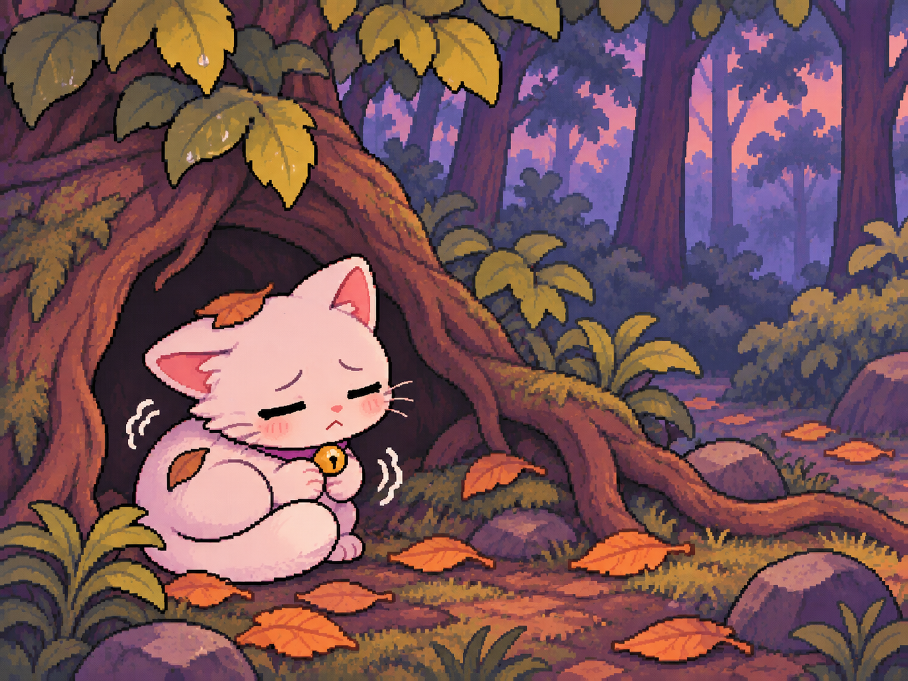
Me dejaron en el bosque. Tuve que buscar comida, agua y un sitio donde esconderme. Extrañaba mi casa y a mi pequeña humana. Miau… tenía miedo.
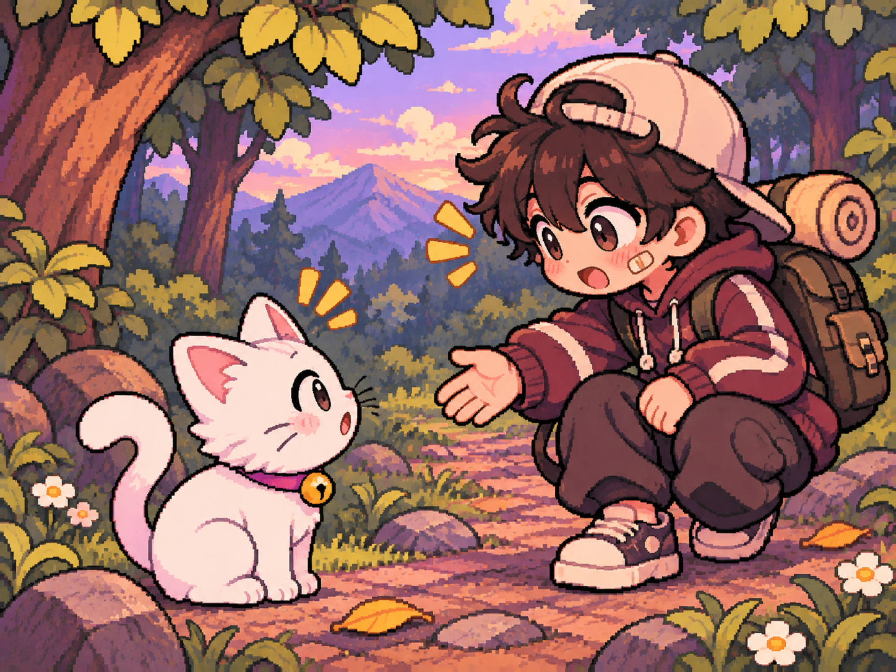
Un día oí pasos acercándose. Levanté las orejas y vi a un pequeño humano que bajaba de la montaña. No sabía si podía confiar en él… pero quizá mi historia estaba a punto de cambiar.
La aventura empezó con una mecánica sencilla: explorar habitaciones del bosque y recoger manzanas. La historia del abandono animal le dio un motivo emocional a la búsqueda. Poco a poco fui desarrollando esta idea y realicé varios cambios cómo cambiar las manzanas por trozos de lana.
En Bitsy, el personaje jugador no habla. Por eso el gatito cuenta lo que ocurre y las decisiones del humano se entienden por sus acciones dentro del juego. Tambien agregue items pequeñitos para que al "recogerlos" salga un dialogo como si el avatar dijera algo.
Este jardín amplía el mundo del juego con recuerdos, personajes y lugares. Se puede seguir sembrando: bocetos, nuevas habitaciones y cambios futuros también forman parte del proceso. Mi idea es hacer crecer el juego, agregar más personajes secundarios y crear más aventuras.
Adoptar es un compromiso a largo plazo. Si una familia ya no puede cuidar a un animal, debe buscar ayuda y una alternativa segura; abandonarlo no es una solución. Cada animal merece protección, paciencia y un hogar donde pueda sentirse a salvo.
Volver al inicio